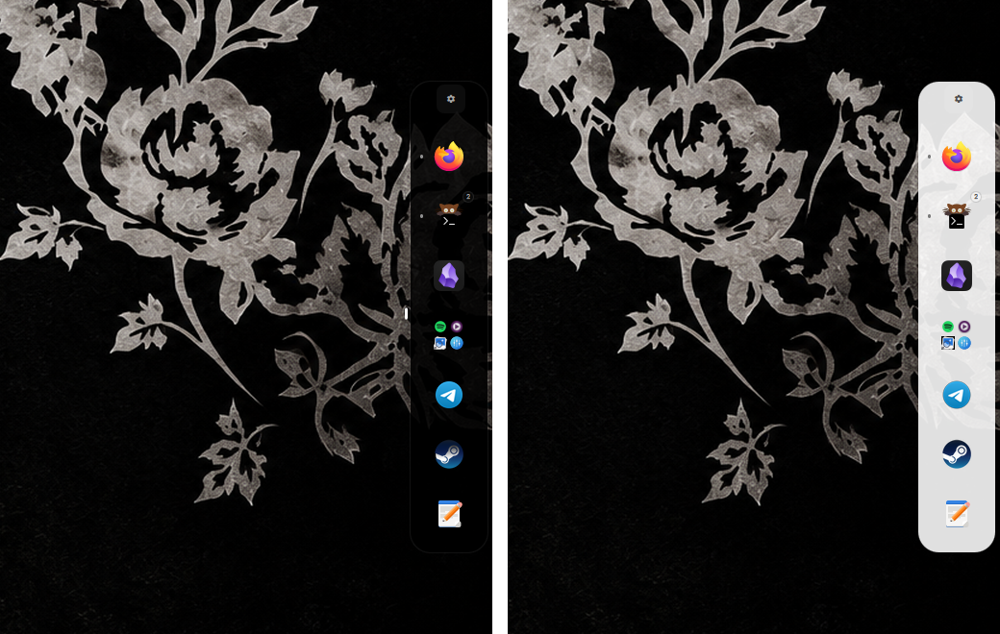
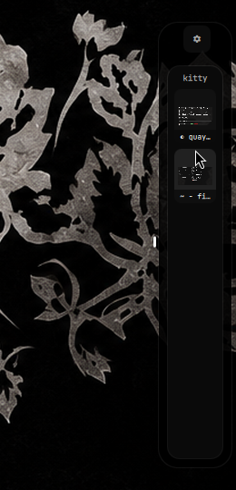
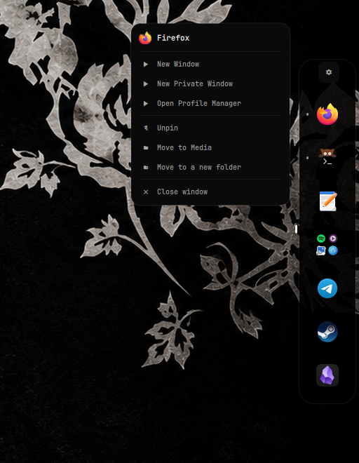
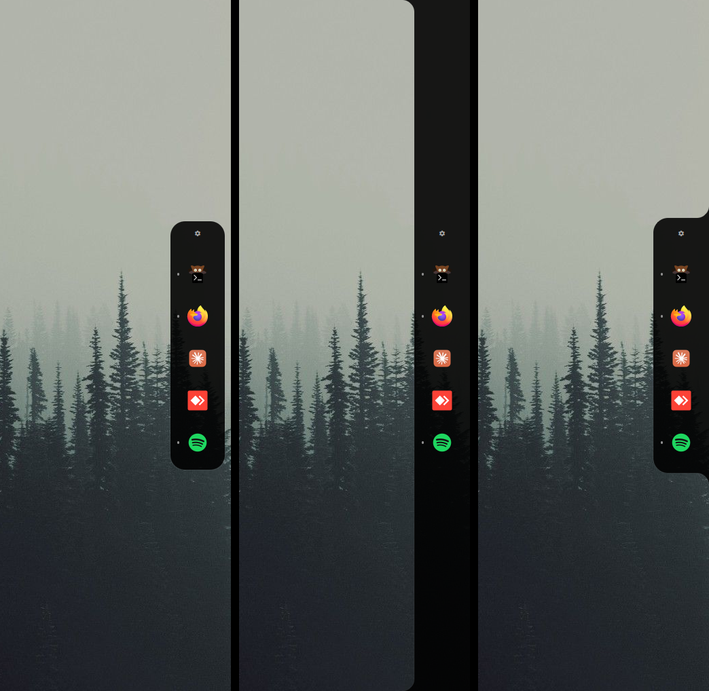
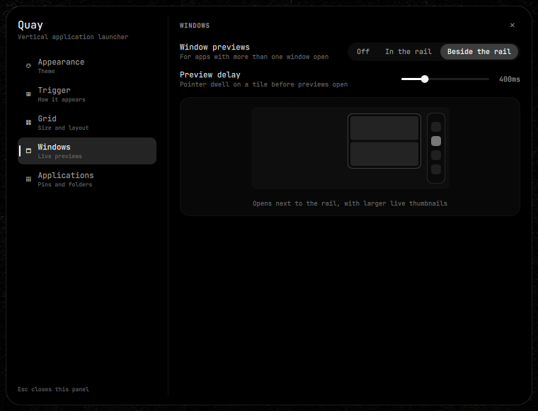

Quay keeps the apps you pin in a rail on the edge of the screen, marks the ones that are running, and moves one row per wheel notch — a phone home screen, turned on its side.
→ Wheel over the rail on the right, or hold the pointer on the terminal.↓ Swipe the rail at the bottom.
Gestures
Everything happens on the rail itself. The demo rail answers to the wheel, clicks and holding the pointer; the rest are for your desktop.
Wheel
Moves one row, then snaps.
Click
Opens the app, or brings it forward. Click again to go through its windows.
Hold the pointer
An app with more than one window shows each window live, so you can pick one.
Middle click
Opens a new window of the app.
Right click
Opens a menu: the app's own shortcuts, a new window, pinning, folders, and closing its windows.
Drop a file on an app
Opens the file with it. Carried to the edge, the file brings the rail out.
× on a preview
Closes that window.
Drag
Moves a tile to a new spot.
Drop on a tile
Makes a folder, or adds to one.
Reading the rail
Short markRunning.Long markThe app you are using.3NumberOpen windows, when there is more than one.Dots on the sideWhich page of the rail is in view.
On a desktop
Captured on Hyprland at 1920×1080: the rail in both themes and in its three styles, window previews beside the rail for an app with two windows, the tile menu, and the Appearance section of Quay's own settings panel.

Black and white themes

Window previews beside the rail

Tile menu

Floating, Flush and Bridge styles

Settings panel, Appearance section
Settings
Quay carries its own settings panel, opened from the gear at the top of the rail. It needs no host settings app, so it behaves the same in any Quickshell config.
Theme
Pure black, pure white, or whichever the system prefers. This page follows along.
Style
Off the edge, along the whole edge as part of the screen's frame, or welded to it with curved joins.
FloatingFlushBridge
Besides pinned apps
What else the rail lists. The demo rail follows along.
Trigger
Always on screen, sliding in when the pointer reaches the edge, or opened with a key.
AlwaysHoverShortcut
Edge
Dock it to any side. The wheel still moves it row by row.
LeftRightTopBottom
Grid
Columns, rows per page, icon size and spacing.
1 column · 6 rows · 52 px
Quay floats over your windows and reserves no space, so nothing is resized when it appears.
Install
Needs Quickshell 0.3 or newer, a wlr-layer-shell compositor, and python3, jq, bash and flock.
Add it to your Quickshell config
cd ~/.config/quickshell
git submodule add https://github.com/lunanoir21/quickshell-quay.git vendor/quay
Load it from your shell root
import "vendor/quay" as QuayModule
ShellRoot {
QuayModule.QuayHost {}
}
That is the whole integration. To try it on its own first, run quickshell -p vendor/quay/Main.qml.
Bind a key, for shortcut mode
Quay never grabs global keys itself. Its settings panel works out the exact line for your setup under Trigger → Shortcut and copies it for you. On Hyprland it looks like this:
Settings live in ~/.config/quickshell/quay/settings.json. Quay creates the file on first run and applies hand edits live. Values it does not recognise are ignored, so a typo cannot leave the rail out of reach.
Every release, newest first. The same notes live in CHANGELOG.md.
1.2.0
Latest
Added
Three rail styles. Appearance → Style picks how the rail meets the screen edge. Floating, the default, keeps it off the edge by a gap you set. Flush runs a strip along the whole edge that flares into the screen at both ends, so the desktop reads as a window with rounded corners; it already sits below bars that reserve space, and frameInset makes room for ones that don't. Bridge welds the rail to the edge with concave joins and grows out of a thin handle as it comes in — the handle stays on the edge while the rail is hidden (set it to 0 for none) and stands down over fullscreen, like the rail itself.
Style settings:edgeGap, fillet, handle and frameInset under appearance. The panel shows each one only for the style that uses it, and out-of-range values are clamped.
Changed
The floating rail keeps 8px off the edge by default, up from a fixed 4px, and the gap is now adjustable as Edge gap.
The gear stays centred on the tile column when the panel is inset from the edge.
1.1.2
Added
Available as an Omarchy plugin.quay-omarchy packages Quay for Omarchy's plugin marketplace as a service, alongside the same built-ins as background, lock, and notifications: omarchy plugin add https://github.com/lunanoir21/quay-omarchy.git --enable.
Changed
Toggle works in Hover mode too. The IPC toggle/show/hide (a keybind, for instance) used to no-op outside Shortcut mode. Now it works in every mode except Always, where nothing would bring the rail back — in Hover, it acts as a manual override alongside the hot edge; hovering the rail and moving away still hides it normally.
Fixed
Manual hide fighting Hover mode. Toggling the rail shut with a keybind while the pointer was still over the hot edge or the rail got reopened by that same pointer position within one reveal delay — it looked like a second rail appearing instead of the first one closing. A manual hide/toggle now holds hover reveals off until the pointer actually leaves.
Missed hover reveals. The hot edge was 6px — a pointer arriving fast could stop right at the screen boundary without a motion event ever landing inside a strip that thin, so the rail occasionally just didn't come up. Widened to 12px.
Segmented buttons not registering clicks. Theme, trigger mode, and other pill-style choices used TapHandler, which cancels a tap whose release lands outside its bounds — easy to hit on a 22px-tall target under some pointer/scaling setups. Switched to a padded MouseArea, the same approach already used by the sliders.
Segmented settings (theme, trigger mode/edge, fullscreen behaviour, window previews, extras) now apply immediately instead of waiting on the settings-file round trip. Whenever that round trip fails — jq missing, no write access, no filesystem watch support — the buttons looked completely dead, while sliders kept working because they already updated in memory first. This also unblocks Shortcut trigger mode's own bind-line panel, which was unreachable when the Mode selector couldn't be changed.
1.1.1
Fixed
Standalone installs. Run as its own config (quickshell -p Main.qml), Quay built its script paths without a separator, so settings were never read or saved and no apps were found. Install paths with spaces work too.
Terminal apps (Terminal=true, such as btop or Vim) open in a terminal: $TERMINAL, then xdg-terminal-exec, then the first common terminal installed. Before, nothing appeared.
Changed
The READMEs list what Quay needs from the compositor, that window previews are Hyprland-only with Quickshell 0.3, and that the interface icons come from a Nerd Font.
1.1.0
Added
Tile menu. Right click a tile for the app's own shortcuts (a private window, a profile manager), a new window, pinning, moving it into a folder, and closing its windows. Folders get Open and Ungroup. It works from the keyboard too.
Window previews beside the rail. Previews open next to the rail with larger live thumbnails, inside the rail as before, or not at all, after a delay you choose.
Close windows from their previews. Hovering a thumbnail shows a close button.
File drops. Drop a file on an app to open it with that app. In hover mode, carrying a file to the edge brings the rail out.
Middle click opens a new window of the app.
Launch feedback. A tile pulses until the app it started shows a window, and a second click in the meantime doesn't start it twice.
Out of the way in fullscreen. While a focused window is fullscreen, the rail and its hot edge stand down (trigger.hideOnFullscreen).
System theme."theme": "auto" follows the system's light/dark preference through xdg-desktop-portal, live.
Windows section in settings, with a small diagram of where previews land.
This changelog, with the latest release in the READMEs and every release on the website.
Changed
Right click opens the tile menu instead of pinning straight away; pinning lives in the menu.
A preview stays open while its app still has windows, so closing one keeps the others in view.
The settings panel animates: it scales in and out, one highlight slides between sections, panes slide in from the direction of travel, and choice controls move a single thumb.
The settings section list keeps a fixed width, so switching sections no longer shifts the layout.
New folders are named in English ("New folder") rather than Turkish.
1.0.0
Added
Vertical rail docked to any screen edge, moving one row per wheel notch, with page markers.
Three ways to appear: always on screen, sliding in at the edge on hover, or toggled by a keybind through IPC.
Pins and folders by drag and drop, plus a drag-and-drop pin board in settings.
Running state at a glance: a short mark for running, a long one for focused, and a count for apps with several windows.
Besides pinned apps, the rail lists nothing, the other open windows, or recently used apps.
Live window previews for apps with more than one window.
Its own settings panel, one click away on the rail's gear, with a helper that works out the exact keybind line for your setup.
Black and white themes.
Never reserves space: Quay floats over windows, so nothing resizes.
Frame-time correct motion: drag autoscroll keeps the same speed at 60 Hz and 165 Hz.